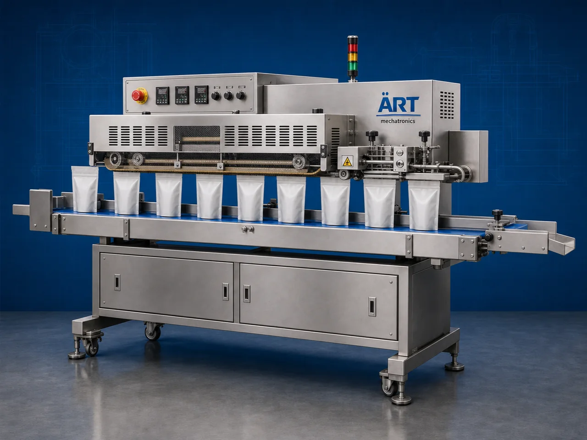

Band Sealer Machine (Continuous Industrial Pouch Sealing System)
A Band Sealer Machine, also known as a Continuous Band Sealing Machine, Continuous Pouch Sealer, or Industrial Band Sealing System, is a high-performance industrial packaging machine designed for continuous pouch sealing, airtight packaging, laminated pouch closing, and high-speed sealing…

About the Band Sealer
Band sealing systems are widely used for: ✔ Continuous pouch sealing ✔ Airtight packaging operations ✔ Laminated pouch sealing ✔ FMCG packaging lines ✔ Industrial packaging automation ✔ High-speed sealing applications
The machine improves: ✔ Packaging quality ✔ Seal strength ✔ Product shelf life ✔ Production efficiency ✔ Product hygiene ✔ Labor productivity
Industrial band sealer machines use: ✔ Continuous moving sealing bands ✔ Precision heat sealing systems ✔ Temperature-controlled sealing technology ✔ Conveyor synchronization mechanisms ✔ PLC or electronic control systems
to produce strong, uniform, leak-proof, and hygienic pouch seals continuously at industrial production speeds.
Band sealer machines are widely used in industries such as:
Pan masala & mouth freshener industries
Tobacco industries
Food processing industries
Spice industries
FMCG industries
Pharmaceutical industries
Chemical industries
Cosmetic industries
where continuous sealing quality and packaging reliability are essential.
The machine is highly suitable for: ✔ Laminated pouch sealing ✔ Powder pouch packaging ✔ Granule pouch sealing ✔ Snack pouch sealing ✔ FMCG packaging ✔ Industrial pouch packaging
ART Mechatronics offers high-performance band sealer machines, engineered for continuous industrial operation, superior sealing quality, reliable performance, and long-term durability.
Working Principle of Band Sealer Machine
Filled pouches are manually or automatically placed onto conveyor system
Conveyor moves pouches continuously toward sealing section
Machine synchronizes pouch movement with sealing bands for uniform sealing quality.
Machine seals: ✔ Laminated pouches ✔ Pillow pouches ✔ Stand-up pouches ✔ Center seal pouches ✔ Gusset pouches ✔ Sachets smoothly and continuously.
Precision temperature systems maintain: Uniform heat distribution Consistent seal strength Leak-proof packaging quality
Cooling system stabilizes seal immediately after heating for strong finishing quality.
Sealed pouches discharged automatically for: Collection Cartoning Secondary packaging Dispatch operations
Types of Band Sealer Machines
- 1. Horizontal Band Sealer Machine
Designed for: ✔ Standard pouch sealing applications
- 2. Vertical Band Sealer Machine
Suitable for: ✔ Powder and liquid pouch sealing operations
- 3. Nitrogen Flushing Band Sealer
Uses: ✔ Extended shelf-life food packaging applications
- 4. Heavy Duty Industrial Band Sealer
Designed for: ✔ Continuous high-volume industrial sealing operations
- 5. Food Grade Band Sealer Machine
Suitable for: ✔ Hygienic food and pharmaceutical packaging systems
- 6. Fully Automatic Continuous Band Sealer
Designed for: ✔ Integrated packaging automation lines
Industries Using Band Sealer Machines
🌿 Pan Masala & Mouth Freshener Industry Pan masala, supari, elaichi, and mouth freshener pouch sealing systems 🚬 Tobacco Industry Tobacco, khaini, nicotine, and snus pouch sealing systems 🌶️ Spice Industry Turmeric, chilli powder, coriander, cumin, and seasoning pouch sealing systems 🍃 Food Processing Industry Snacks, namkeen, grains, flour, pulses, dry fruits, and ingredient packaging systems 🛒 FMCG Industry Consumer product pouch sealing systems 💊 Pharmaceutical Industry Medicine and healthcare pouch sealing systems ⚗️ Chemical Industry Powder, granule, and liquid chemical pouch sealing systems 🧴 Cosmetic Industry Cosmetic cream, lotion, and powder pouch sealing systems
Features & Advantages
✔ Continuous high-speed pouch sealing operation ✔ Strong and airtight sealing quality ✔ Accurate temperature-controlled sealing system ✔ Supports multiple pouch types and sizes ✔ Conveyor-based smooth pouch handling ✔ Improves product shelf life and hygiene ✔ Reduces packaging leakage and wastage ✔ Hygienic food-grade construction available ✔ Reliable long-term industrial performance
Technical Highlights
Machine Type: Horizontal band sealer Vertical band sealer Nitrogen flushing sealer Packaging Material: Laminated films Metalized pouches Polyester pouches LDPE laminates Features: Temperature control system Conveyor synchronization Speed control system Batch coding integration Cooling section Sealing Type: Heat seal Airtight seal Continuous seal Automation: Semi-automatic Fully automatic industrial systems
Turnkey Band Sealing Solutions
ART Mechatronics offers: Complete band sealing systems Industrial pouch sealing solutions Packaging automation integration systems Conveyor synchronization systems Installation & commissioning After-sales service & AMC
Why Choose Art Mechatronics
Expertise in industrial packaging and sealing systems Customized band sealing solutions for multiple industries High-performance and durable sealing technology Advanced automation and synchronization systems Proven industrial packaging performance across sectors
Applications
Pan Masala Manufacturing Plants Tobacco Processing Units Food Processing Industries FMCG Packaging Facilities Pharmaceutical Industries Spice Processing Plants
Get pricing & specs for the Band Sealer
Share the product, target capacity, current process and plant location. These details help our engineers discuss the right machine or line configuration.
One partner, from design to start-up
ART Mechatronics designs, manufactures, installs and commissions your Band Sealer solution with regional presence in India, UAE and Thailand.